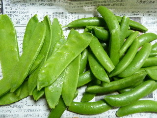
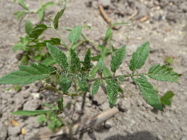
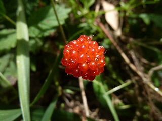

遊びで植物を育てよう
2013/05/12
豆を収穫しました。
スナップエンドウ、サヤエンドウです

今年初収獲です。
若い豆は美味しいです。
今回は少な目に収穫しましたが、しばらくの間は豆三昧になりそうです。
【5月TOP】
【日記TOP】
【園芸TOP】
2013/05/18
トマトの苗が出ました。
去年トマトが植わってた場所に、新しい苗が出てきました。

種が落ちて芽が出るので、毎年同じ場所でトマトを育てています。
連作ですけど、特に気になるようなことはないです。
美味しいですよ。
【5月TOP】
【日記TOP】
【園芸TOP】
2013/05/18
クサイチゴを食べました。
雑草の中で赤く目立っていました。

せっかくなので収穫しました。（10個くらい。）
美味しかったです。
でも沢山採れないのがちょっと残念です。
勝手に生えてるものなので、しょうがないですね。
【5月TOP】
【日記TOP】
【園芸TOP】
過去の日記
【2024年5月の日記】
【2023年5月の日記】
【2022年5月の日記】
【2021年5月の日記】
【2020年5月の日記】
【2019年5月の日記】
【2018年5月の日記】
【2017年5月の日記】
【2016年5月の日記】
【2015年5月の日記】
【2014年5月の日記】
【2013年5月の日記】
【5月TOP】
【日記TOP】
【園芸TOP】
畑仕事じゃないよ。
【おいしいものを食べよう。】【しっかり寝よう。】
【ソロ活をしよう!】【季節感のあることをしよう。】【動画視聴はほどほどに。】【当サイトの全てのコンテンツは無断転載禁止です。】